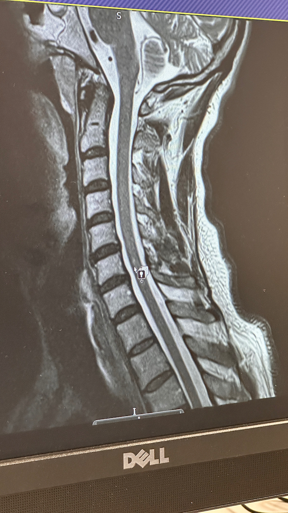
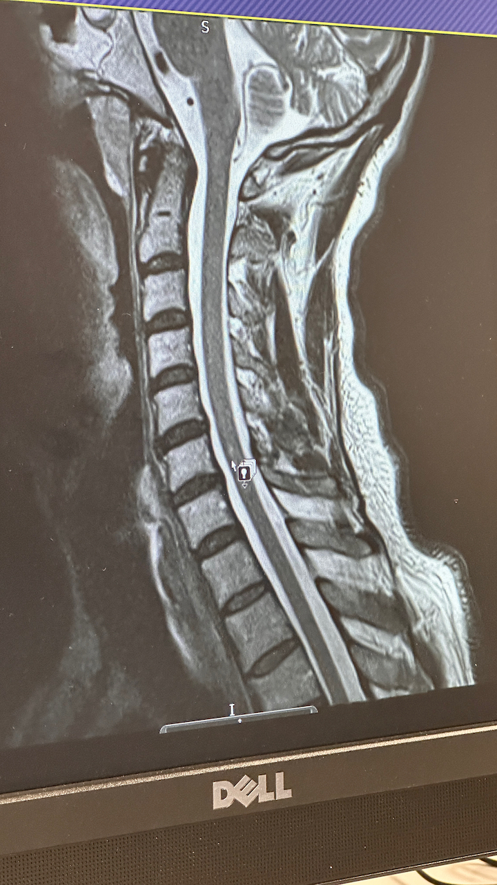

1. Annotated MRI Imagery

Right cerebellar white matter scar — suspected ischemic stroke.
Cervical spinal cord lesion — likely inflammatory origin.
Date Compiled: July 2025
Right cerebellar white matter scar — suspected ischemic stroke.
Cervical spinal cord lesion — likely inflammatory origin.